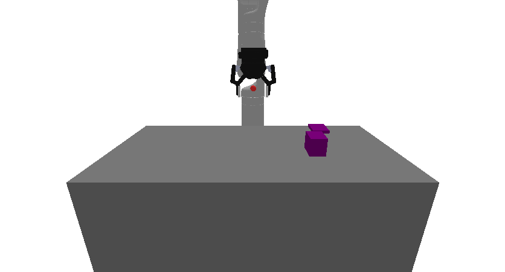

Obstruction3D
Random Action
Initial State Distribution

Description
A 3D obstruction clearance environment where the goal is to place a target block on a designated target region by first clearing obstructions.
The robot is a Kinova Gen-3 with 7 degrees of freedom that can grasp and manipulate objects. The environment consists of: - A table with dimensions 0.400m × 0.800m × 0.500m - A target region (purple block) with random dimensions between (0.02, 0.02, 0.005) and (0.05, 0.05, 0.005) half-extents - A target block that must be placed on the target region, sized at 0.8× the target region's x,y dimensions - Obstruction(s) (red blocks) that may be placed on or near the target region, blocking access
Obstructions have random dimensions between (0.01, 0.01, 0.01) and (0.02, 0.02, 0.03) half-extents. During initialization, there's a 0.9 probability that each obstruction will be placed on the target region, requiring clearance.
The task requires planning to grasp and move obstructions out of the way, then place the target block on the target region.
Variants
This environment has 5 variant(s) with different configurations:
References
Similar environments have been used many times, especially in the task and motion planning literature. We took inspiration especially from the "1D Continuous TAMP" environment in PDDLStream.